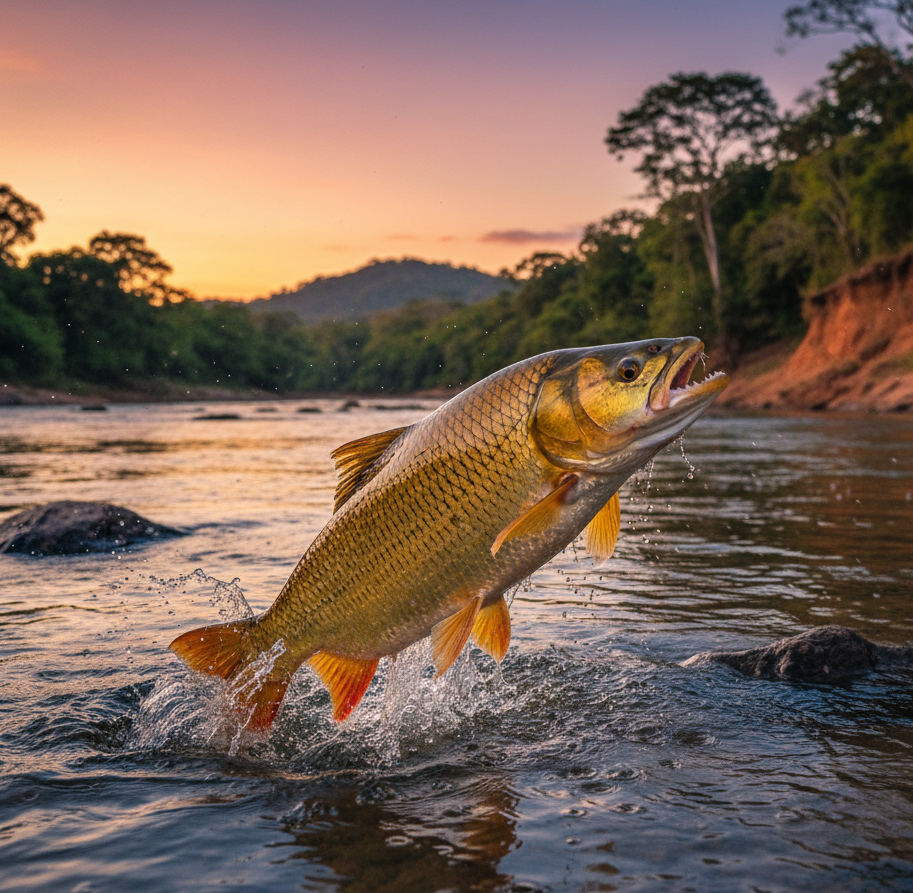
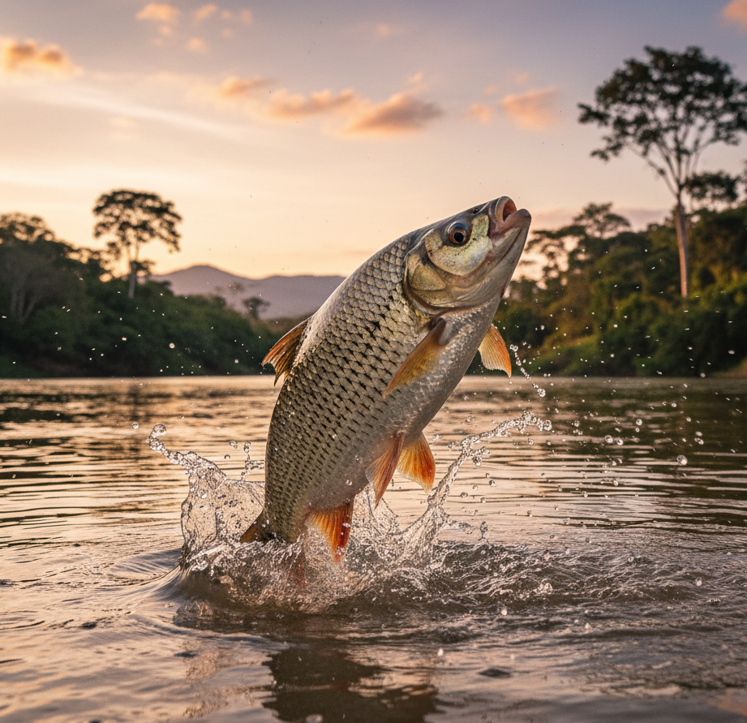
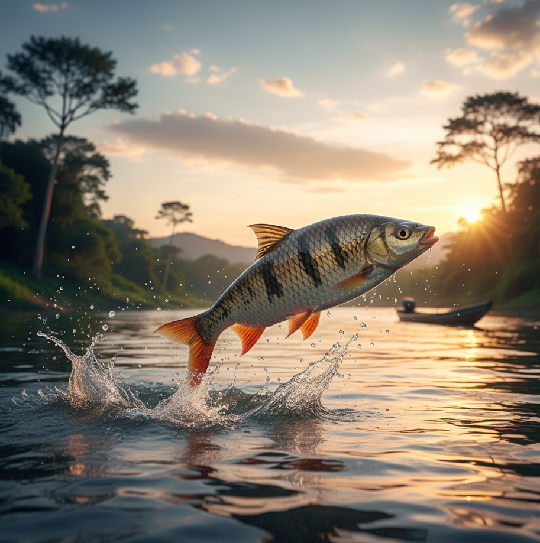
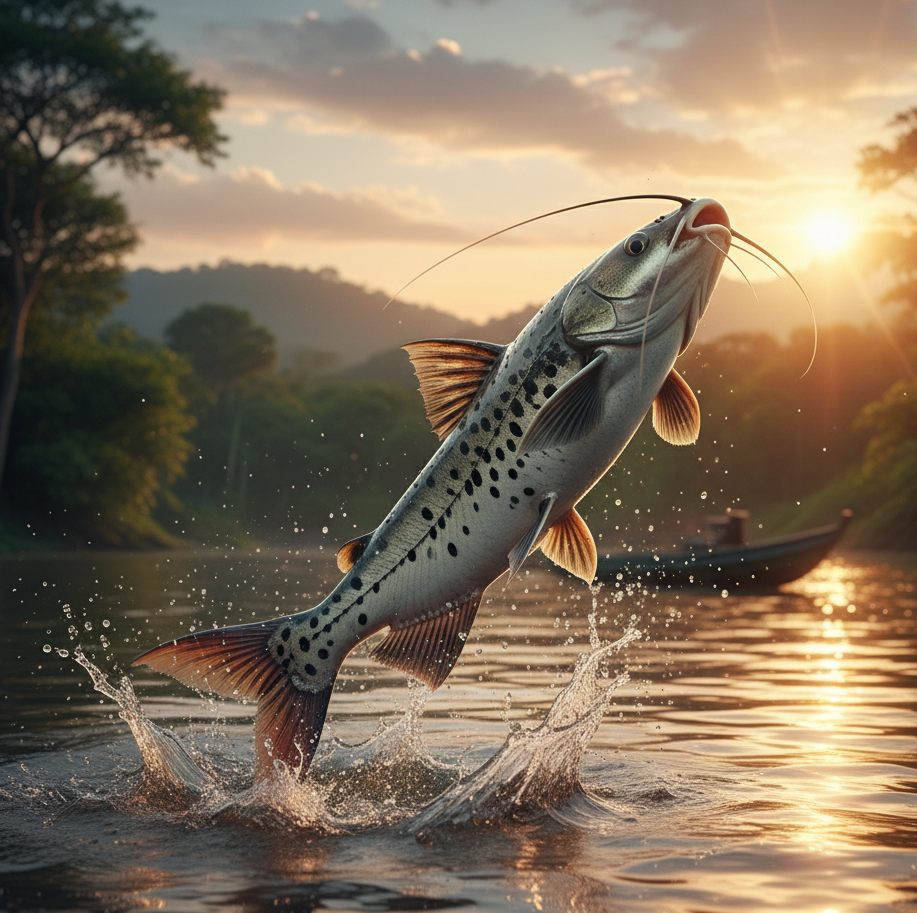
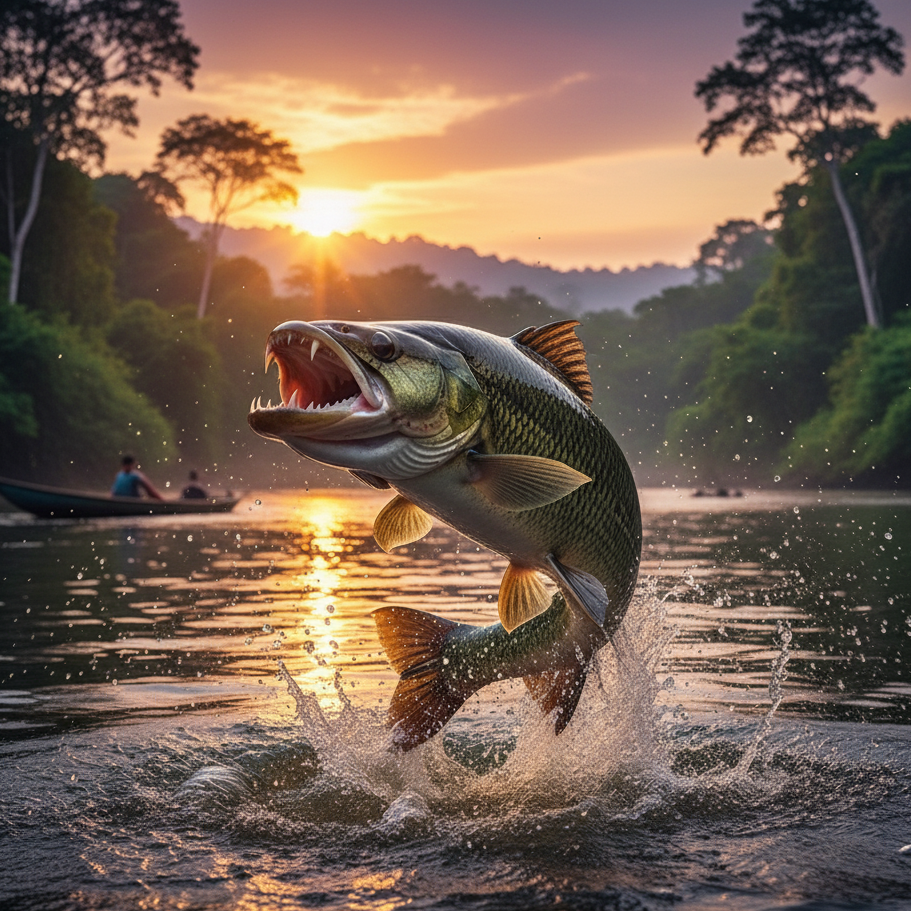

Sobre o Projeto PescAmador
Este site é um guia para a pesca amadora responsável, com foco inicial no Rio Paraopeba (Bacia do Rio São Francisco) em Minas Gerais. Nosso objetivo é centralizar informações úteis para que o seu hobby seja praticado de forma consciente e sustentável.
Legislação e Regras
Conhecer as regras é fundamental para evitar multas e, principalmente, para proteger o meio ambiente. Aqui você encontrará informações sobre a licença de pesca, tamanhos permitidos e outras normas importantes.
Licença de Pesca Amadora
Para a prática da pesca amadora, é obrigatória a apresentação da licença de pescador amador. A carteira pode ser obtida online através do site do IEF-MG.
Categorias e Valores
- Desembarcada (A1): Para pesca sem embarcação - R$ 20,00
- Embarcada (A2): Para pesca com embarcação - R$ 60,00
Isenções
São isentos do pagamento da taxa:
- Menores de 12 anos
- Aposentados
- Homens com mais de 65 anos
- Mulheres com mais de 60 anos
Validade e Documentação
A carteira tem validade de 1 ano a partir da data de autenticação bancária. Durante a pesca, é necessário portar:
- Carteira de Pesca Amadora
- Documento de identidade
- Comprovante de pagamento (para não isentos)
- Comprovante de aposentadoria (para aposentados)
Regulamentações Importantes
ATENÇÃO: Regras Especiais para a Pesca no Rio Paraopeba
Devido aos impactos ambientais causados pelo rompimento da barragem em Brumadinho, a pesca na Bacia do Rio Paraopeba opera sob regras emergenciais e restritivas, definidas pela Portaria IEF nº 16, de 28 de fevereiro de 2019.
Esta portaria continua em vigor, pois nenhuma nova regulamentação foi publicada para substituí-la.
As regras principais são:
- PROIBIÇÃO DE NATIVOS: Está totalmente vedada a pesca de espécies nativas em toda a bacia do Rio Paraopeba.
- DEVOLUÇÃO OBRIGATÓRIA: Caso um pescador capture acidentalmente uma espécie nativa (ex: Curimatã, Surubim, Dourado), ela deve ser devolvida imediatamente ao corpo d'água.
- PERMISSÃO DE EXÓTICAS: É permitida apenas a pesca amadora de espécies exóticas (como Tilápia, Bagre-Africano) e híbridas.
- LIMITE DE CAPTURA (EXÓTICAS): Para as espécies permitidas (exóticas e híbridas), o limite de captura para o pescador amador é de 10 kg mais um exemplar.
- PESCA PROFISSIONAL: A pesca profissional também segue restrições na bacia, conforme estabelecido pelo Decreto nº 47.383, de 2018.
ALERTA DE SAÚDE (Outubro de 2025)
Além das regras da portaria, é fundamental notar que, devido a novos incidentes de mortandade de peixes reportados em setembro e outubro de 2025, autoridades locais e a Defesa Civil estão recomendando que a população evite pescar e consumir qualquer peixe do Rio Paraopeba por precaução e risco de contaminação.
Espécies Permitidas
Espécies Exóticas
Tucunaré (Cichla ocellaris)
Peixe predador originário da bacia amazônica, introduzido em várias regiões do Brasil. Características principais:
- Tamanho: Pode atingir até 74 cm de comprimento
- Coloração: Verde-oliva a amarelo-esbranquiçado, com três faixas escuras verticais e um ocelo na base da nadadeira caudal
- Habitat: Prefere águas claras e quentes (22-30°C), com pH entre 6,5 e 7,5
- Alimentação: Carnívoro, alimenta-se principalmente de peixes menores e crustáceos
- Comportamento: Territorial e ativo durante o dia, excelente para pesca esportiva
Tambaqui (Colossoma macropomum)
Um dos maiores peixes de escama da América do Sul, originário das bacias do Amazonas e Orinoco:
- Tamanho: Pode alcançar 1,1 metro e pesar até 44 kg
- Características: Possui dentes molares adaptados para triturar sementes e frutos, corpo escuro na parte inferior
- Habitat: Adapta-se bem a diferentes ambientes, preferindo águas com vegetação
- Alimentação: Onívoro, consome frutos, sementes, plâncton e insetos
- Reprodução: Realiza migrações em cardumes quando maduro
Tilápia-do-Nilo (Oreochromis niloticus)
Espécie africana introduzida no Brasil em 1971, muito popular na piscicultura:
- Características: Crescimento rápido e alta adaptabilidade
- Habitat: Prefere águas quentes (26-28°C), tolera diferentes condições ambientais
- Alimentação: Onívora, alimenta-se de plâncton e aceita ração
- Reprodução: Incubação oral dos ovos, alta prolificidade
- Observação: Espécie bem adaptada aos ambientes brasileiros
Bagre Africano (Clarias gariepinus)
Peixe de grande porte originário da África e Ásia, introduzido em várias partes do mundo:
- Tamanho: Pode atingir até 1,4 m de comprimento e pesar até 59 kg
- Características: Corpo robusto, olhos pequenos, barbilhões longos, coloração escura no dorso e clara no ventre
- Habitat: Adapta-se a diversos ambientes de água doce, com profundidade entre 4 e 80m
- Alimentação: Onívoro, alimenta-se de peixes, insetos, moluscos e matéria vegetal
- Resistência: Altamente adaptável a condições ambientais extremas, possui órgão respiratório que permite respirar ar atmosférico
Carpa Comum (Cyprinus carpio)
Uma das espécies de peixe mais antigas a serem domesticadas, originária da Europa e Ásia:
- Tamanho: Pode alcançar 1,2 m de comprimento e pesar até 30 kg
- Características: Corpo robusto, escamas grandes, coloração variando de cinza-esverdeado a dourado
- Habitat: Prefere águas calmas de lagos e rios com vegetação abundante
- Alimentação: Onívora, consome plantas, insetos, crustáceos e outros organismos aquáticos
- Variedades: Inclui diferentes tipos como carpa-espelho, carpa-colorida e carpa-capim
- Longevidade: Pode viver mais de 20 anos em condições adequadas
Híbridos Permitidos
Tambacu (Tambaqui x Pacu)
Híbrido resultante do cruzamento entre Tambaqui e Pacu, combinando características de ambas as espécies.
Pintachara (Pintado x Cachara)
Híbrido resultante do cruzamento entre Pintado e Cachara, unindo características destes dois bagres.
IMPORTANTE
Em caso de captura acidental de espécie nativa, o peixe deve ser devolvido imediatamente ao rio, tomando todos os cuidados para garantir sua sobrevivência.
Peixes do Rio Paraopeba
O Rio Paraopeba abriga uma rica diversidade de peixes. Conhecer as espécies é o primeiro passo para uma pescaria consciente. Confira abaixo as principais espécies encontradas em nossas águas:
Dourado (Salminus brasiliensis)

O Dourado é um dos peixes mais nobres e cobiçados pelos pescadores esportivos. Conhecido como "rei do rio", possui coloração dourada característica e corpo alongado e musculoso. Pode atingir mais de 1 metro de comprimento e pesar até 30 kg. É um predador voraz que se alimenta principalmente de outros peixes, realizando espetaculares saltos durante a captura de presas ou quando fisgado.
- Habitat: Prefere águas correntes e bem oxigenadas
- Alimentação: Carnívoro, alimenta-se principalmente de peixes menores
- Reprodução: Realiza migração reprodutiva durante a piracema
Curimba (Prochilodus lineatus)

A Curimba, também conhecida como Curimbatá, é um peixe de médio porte muito comum nos rios brasileiros. Possui corpo alongado e prateado, com escamas bem definidas. Pode atingir até 75 cm de comprimento e pesar até 4,5 kg.
- Habitat: Prefere rios com fundo lodoso e águas calmas
- Alimentação: Detritívoro, alimenta-se de matéria orgânica e microorganismos
- Reprodução: Realiza longas migrações durante a piracema
- Característica especial: Importante para a limpeza do ambiente aquático
Piau (Leporinus obtusidens)

O Piau é um peixe de médio porte, conhecido por suas listras horizontais escuras no corpo prateado. Pode atingir até 40 cm de comprimento e 2 kg de peso. É um peixe versátil que se adapta bem a diferentes ambientes e condições da água.
- Habitat: Rios, lagos e áreas alagadas
- Alimentação: Onívoro, come frutas, sementes e pequenos animais
- Reprodução: Realiza migração reprodutiva na piracema
Mandi (Pimelodus maculatus)

O Mandi é um peixe de couro (sem escamas) da família dos bagres. Possui coloração amarelada ou acinzentada com manchas escuras e pode atingir 50 cm de comprimento. É conhecido como "Mandi-Chorão" por emitir um som quando capturado.
- Habitat: Remansos das margens dos rios e áreas com cascalho
- Alimentação: Onívoro, come insetos, moluscos e detritos
- Característica especial: Possui espinhos com toxina nas nadadeiras - manuseie com cuidado!
Traíra (Hoplias malabaricus)

A Traíra é um peixe predador com corpo robusto e coloração que varia do marrom ao verde-escuro. Pode atingir 65 cm e pesar até 4 kg. Possui dentes afiados e é famosa por sua agressividade na pesca esportiva.
- Habitat: Águas calmas, lagos e áreas com vegetação
- Alimentação: Carnívora, caça outros peixes e anfíbios
- Característica especial: Consegue sobreviver em águas com pouco oxigênio
IMPORTANTE: Restrições de Pesca
Devido aos impactos ambientais na região, a pesca de espécies nativas está temporariamente proibida no Rio Paraopeba. Em caso de captura acidental, o peixe deve ser devolvido imediatamente à água.
Período de Piracema (Defeso)
Período de Defeso 2025/2026 – Regra Geral MG
O período de piracema (defeso) é o tempo de proteção à reprodução dos peixes. Nas bacias hidrográficas de Minas Gerais, como a do Rio São Francisco (da qual o Paraopeba faz parte), o período de restrição geral ocorre de 1º de novembro de 2025 a 28 de fevereiro de 2026.
Durante este período, nas bacias sem restrições especiais, aplicam-se as seguintes regras:
- Proibida a pesca de espécies nativas
- Permitida a pesca amadora de espécies exóticas e híbridas (geralmente com limite de 3 kg)
- Permitido o uso de linha de mão, vara, caniço, carretilha ou molinete
- Proibido o uso de redes e equipamentos de captura em massa
ATENÇÃO: A Regra do Rio Paraopeba é DIFERENTE e VÁLIDA O ANO TODO
As regras gerais de piracema (descritas acima) NÃO se aplicam à Bacia do Rio Paraopeba.
Devido ao rompimento da barragem em Brumadinho, o Paraopeba possui uma regulamentação de emergência, válida o ano inteiro, que substitui as regras de piracema: a Portaria IEF nº 16, de 28 de fevereiro de 2019.
Regras Permanentes do Rio Paraopeba (válidas em qualquer mês do ano)
- PROIBIÇÃO TOTAL DE NATIVOS: É terminantemente proibida a pesca de espécies nativas em qualquer época do ano
- Se capturar uma espécie nativa (como Curimatã, Piau, Surubim) acidentalmente, ela deve ser devolvida imediatamente ao rio
- PERMISSÃO DE EXÓTICAS: É permitida apenas a pesca amadora de espécies exóticas (como Tilápia, Bagre-Africano) e híbridas
- LIMITE DE CAPTURA (EXÓTICAS): O limite de captura para as espécies permitidas (exóticas/híbridas) é de 10 kg mais um exemplar por pescador
- LICENÇA: O pescador amador deve portar e manter atualizada a carteira de pesca
- COMERCIANTES: Estabelecimentos que comercializam pescado devem se registrar no IEF e declarar seus estoques
O período de piracema ocorre de 1º de novembro a 28 de fevereiro do ano subsequente, quando a pesca é totalmente proibida para proteger a reprodução dos peixes.
Espécies Permitidas
Atualmente, apenas é permitida a captura das seguintes espécies:
- Espécies exóticas: Tucunaré, Tambaqui, Tilápia, Bagre Africano, Carpas e outras espécies não nativas
- Híbridos: como o Tambacu (Tambaqui x Pacu) e Pintachara (Pintado x Cachara)
Importante: Em caso de captura acidental de espécie nativa, o peixe deve ser devolvido imediatamente ao rio.
Dicas Essenciais para Pescadores
Uma pescaria bem-sucedida depende não só da técnica, mas também de conhecimentos práticos e equipamentos adequados. Confira nossas dicas essenciais:
Nós de Pesca Fundamentais
Dominar alguns nós básicos é essencial para qualquer pescador. Confira neste vídeo tutorial completo como fazer os principais nós de pesca:
Principais Nós para Pesca
- Nó Palomar: Um dos nós mais fortes e versáteis, mantendo até 95% da resistência da linha
- Nó Clinch Melhorado: Excelente para linhas monofilamento e muito confiável
- Nó Uni: Versátil e resistente, ideal para emendar linhas
DICAS IMPORTANTES PARA NÓS
- Sempre umedeça o nó antes de apertar
- Faça o teste de resistência antes de pescar
- Corte as pontas deixando 3-4mm
- Pratique em casa com diferentes linhas
- Mantenha a linha sem torções ao fazer o nó
Equipamentos Essenciais
- Kit de Pesca:
- Vara compatível com o tipo de pesca
- Molinete ou carretilha de qualidade
- Linhas para diferentes situações
- Anzóis variados (2/0 a 8/0 para peixes grandes)
- Alicates (bico e contenção)
- Tesoura de pesca reforçada
- Iscas naturais e artificiais diversas
- Proteção Pessoal:
- Protetor solar FPS 50+ à prova d'água
- Chapéu/boné com proteção UV
- Óculos polarizados de qualidade
- Repelente forte e duradouro
- Camisa UV manga longa
- Luvas de proteção
- Acessórios Importantes:
- Caixa térmica grande com gelo
- Lanterna de cabeça com LED potente
- Kit primeiros socorros completo
- Facão para trilhas
- Corda resistente (10m)
- Isqueiro/fósforo à prova d'água
- Sacolas para lixo reforçadas
Dicas de Acampamento
- Escolha do Local:
- Procure áreas elevadas e planas
- Mínimo 30m de distância da água
- Evite áreas com árvores mortas
- Verifique a direção do vento
- Observe sinais de enchente
- Montagem do Acampamento:
- Limpe bem a área escolhida
- Monte a barraca com a entrada oposta ao vento
- Faça valetas para drenagem de água
- Organize uma área para cozinha
- Mantenha alimentos protegidos e elevados
- Fogueiras Seguras:
- Faça um círculo de pedras
- Limpe 3m ao redor (sem vegetação)
- Mantenha balde com água próximo
- Nunca deixe o fogo sem supervisão
- Apague completamente com água
- Preservação Ambiental:
- Use somente lenha caída
- Separe lixo orgânico e reciclável
- Evite produtos descartáveis
- Sanitários a 60m da água
- Não lave utensílios no rio
- Fotografe e não colete plantas
DICAS DE SEGURANÇA
- Informe alguém sobre sua localização
- Tenha um kit de primeiros socorros completo
- Salve contatos de emergência no celular
- Leve bateria extra ou carregador solar
- Conheça as espécies perigosas da região
- Verifique a previsão do tempo antes de sair
LEMBRE-SE
Uma pescaria responsável é sobre respeitar o ambiente, garantir sua segurança e preservar os recursos naturais para as futuras gerações. Siga sempre as regulamentações locais e pratique a pesca com consciência ambiental.